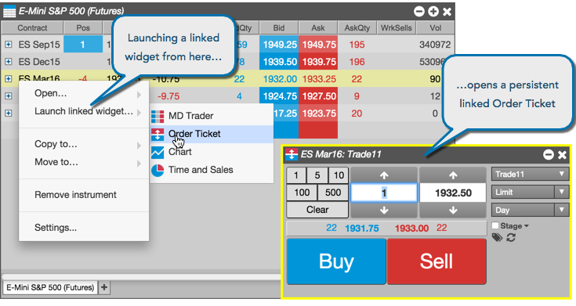

A linked Order Ticket lets you enter orders for a selected contract in the Market Grid. Unlike a floating order ticket, a linked Order Ticket remains open after you place an order.

Note: The yellow border around the Order Ticket indicates that the ticket will not close when you place an order.